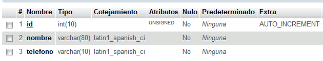
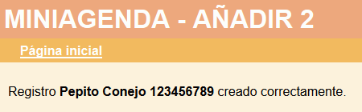
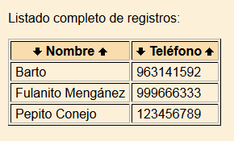
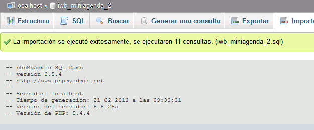

Descomprimir dos veces el archivo comprimido miniagenda-130221.zip, en las carpetas miniagenda_1 y miniagenda_2. Cada aplicación se abrirá en el navegador con la dirección miniagenda_1/index.php y miniagenda_2/index.php.
2. Crear una base de datos
Entrar en phpMyAdmin como usuario root y crear un usuario de MySQL con nombre iwb_miniagenda_1, contraseña iwb_miniagenda_1 y base de datos iwb_miniagenda_1.
Entrar en phpMyAdmin como usuario iwb_miniagenda_1 y crear en la base de datos iwb_miniagenda_1 la tabla contactos con los siguientes campos:
id INTEGER UNSIGNED NOT NULL AUTO_INCREMENT
nombre VARCHAR(80)
telefono VARCHAR(10),
PRIMARY KEY(id)
Hacer una captura de toda la pantalla donde se vea la estructura de la tabla y guardarla como phpmyadmin-1.png:

3. Utilizar la aplicación Miniagenda 1
Configurar la aplicación miniagenda_1 para que esta utilice la base de datos creada en el ejercicio anterior.
Abrir la aplicación Miniagenda 1
Insertar tres registros en la tabla contactos:
Nombre: Pepito Conejo. Teléfono: 123456789.
Nombre: Fulanito Mengánez. Teléfono: 999666333.
Su nombre y un número de teléfono cualquiera.
Hacer una captura de toda la pantalla de una de las inserciones y guardarla como phpmyadmin-2.png:

Listar los registros. Hacer una captura de toda la pantalla y guardarla como phpmyadmin-3.png:

4. Crear una copia de seguridad
Entrar en phpMyAdmin como usuario iwb_miniagenda_1, elegir la base de datos iwb_miniagenda_1 y exportar la tabla con el método rápido al fichero iwb_miniagenda_1.sql.
5. Crear una segunda base de datos
Entrar en phpMyAdmin como usuario root y crear un usuario de MySQL con nombre iwb_miniagenda_2, contraseña iwb_miniagenda_2 y base de datos iwb_miniagenda_2.
Hacer una copia de la copia de seguridad iwb_miniagenda_1.sql llamándola iwb_miniagenda_2.sql.
Editar la copia de seguridad iwb_miniagenda_2.sql añadiendo varios registros más:
Nombre: Numa Nigerio. Teléfono: 111222333.
Nombre: John Doe. Teléfono: 222444666.
Un nombre y un número de teléfono cualquiera.
Entrar en phpMyAdmin como usuario iwb_miniagenda_2, e importar la copia iwb_miniagenda_2.sql. Hacer una captura de toda la pantalla mostrando el resultado de la importación y guardarla como phpmyadmin-4.png:

6. Utilizar la aplicación Miniagenda 2
Configurar la aplicación miniagenda_2 para que esta utilice la base de datos creada en el ejercicio anterior.
Abrir la aplicación Miniagenda 2
Listar los registros. Hacer una captura de toda la pantalla y guardarla como phpmyadmin-5.png: